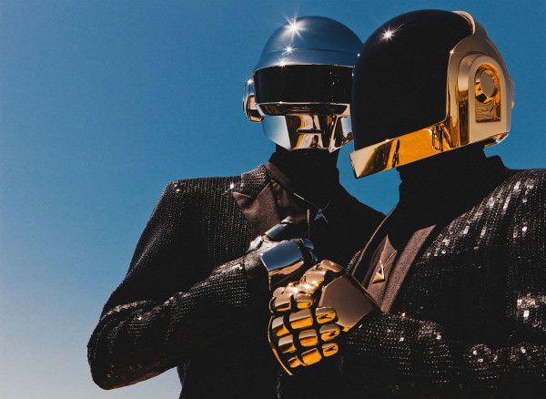
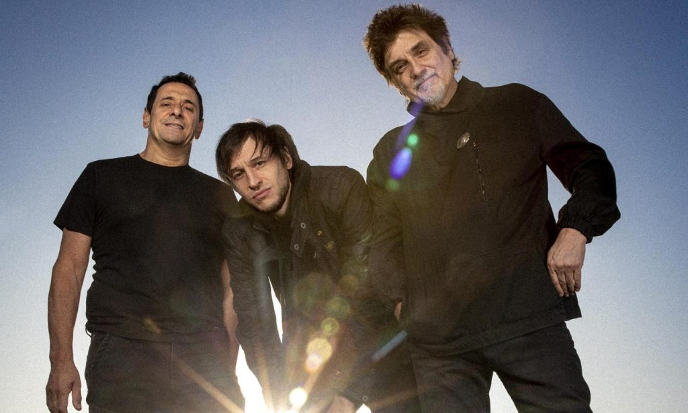
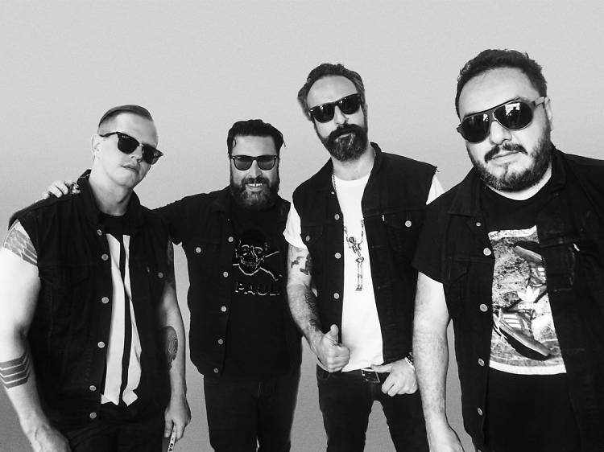
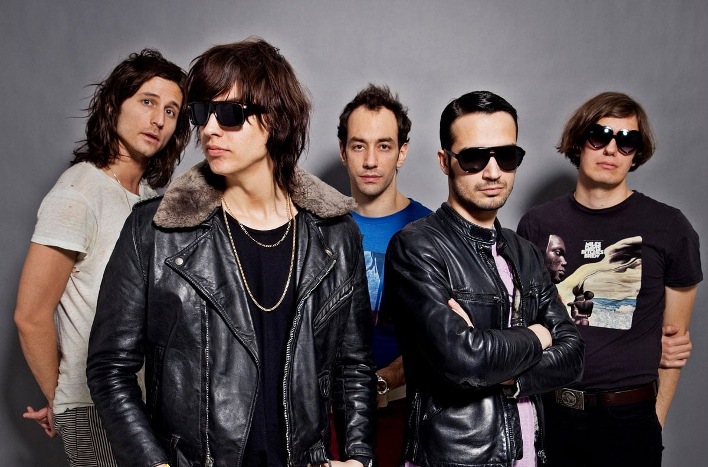

Escenario Principal
Daft Punk

El dúo francés de rock electrónico está de vuelta. Cerrarán el sábado a las 22 hs.
Divididos

La aplanadora del rock oriunda de Hurlingham. Cerrarán el viernes a las 22 hs.
Molotov

La banda mexicana que fusiona punk, rap y rock va a abrir el viernes a las 18 hs
The Strokes

Llegan directo de USA al oeste de Buenos Aires. Indie rock el sábado a las 18 hs.